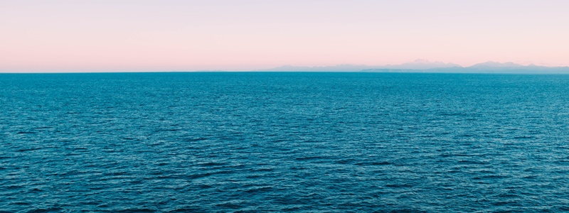

Objetivos

Nosso objetivo é diminuir a quantidade de microplástico no ambiente, para reduzir todos os malefícios que o microplástico pode causar.
Nosso objetivo é diminuir a quantidade de microplástico no ambiente, para reduzir todos os malefícios que o microplástico pode causar.